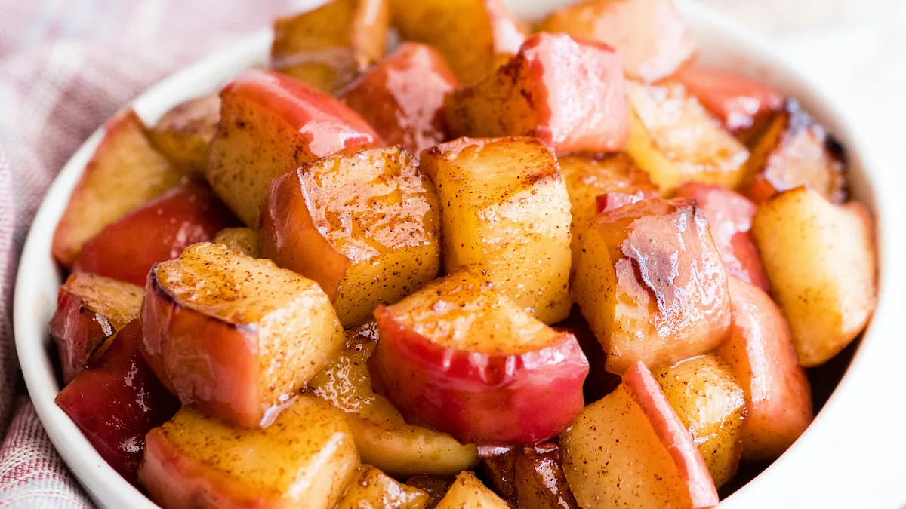

Cubed Cinnamon Apples
This healthy snack is a hit for everyone!
Ingredients:
- One apple per person
- Cinnamon, to taste
- Butter, to taste
Steps:
- Cube the apples. For additional instructions on how to cut an apple into cubes, you can visit this link for more info
- Grab a stick of butter and cut as much butter is needed to grease the pan and the apples
- Turn on the stovetop with a frying pan on top
- Put the butter and apple cubes in a frying pan, and stir until apples are covered in butter
- Coat the apples in cinnamon to taste
- Stir until the cinnamon sticks to the cubes
- Enjoy